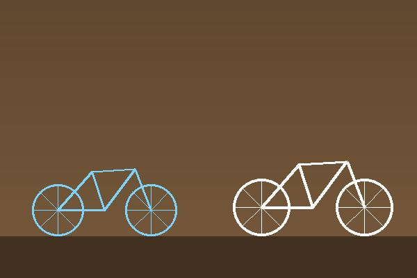

Cykelskola

Det är aldrig för sent att lära sig cykla. Vi träffas på söndagar och tränar i en lugn miljö.
Grupper
- Lära sig cykla: för vuxna och barn som aldrig cyklat
- Trafikträning: för dig som vill känna dig tryggare i stadstrafik
Cyklar och hjälmar
Vi lånar ut cyklar och hjälmar under lektionerna.